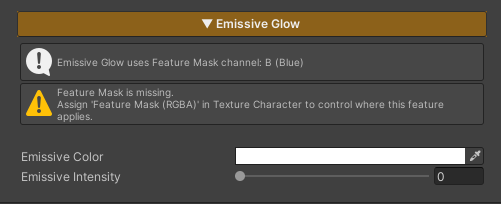
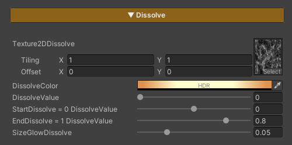
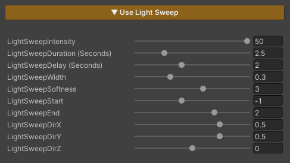

Video ZLZ Anime Shader – CharacterFX System & Overview

Emissive is used to add light to specific areas of the character, making them appear glowing or visually prominent. It is suitable for elements such as gems, eyes, or special effects on the character.
This feature controls its active area through the
Feature Mask (Blue Channel).
If no mask is defined in this channel, the Emissive effect will not be applied.

Dissolve Character is used to gradually fade a character out of the scene. It is commonly applied when a character dies, warps, or is removed from the scene. The effect allows flexible control over the pattern, color, and timing of the dissolve.
Target Darken is a feature used to reduce the brightness of selected characters in order to draw attention to specific ones, such as characters using skills, appearing in cutscenes, or highlighted during important moments in a scene.
The Target Darken system separates control into two levels:
Overall concept
- Global = Enables Darken mode for the entire scene
- Local = Selects which characters are not darkened
TargetDarkenIntensity : Controls how dark the character becomes
Lower values → the character appears darker
0 = Not darkened (remains fully lit)1 = DarkenedTargetDarkenLocal = 1 → the character can be darkenedTargetDarkenLocal = 0 → the character will not be darkenedCreate an Empty GameObject and attach the script
Assets/ZLZ_AnimeShader/Demo/Scripts/ZLZ_GlobalDarkenController.cs

Indicator / Target Select is a feature used to highlight characters that are currently selected as targets, such as characters being locked onto, selected for attack, or about to be affected by certain skills.
It helps players immediately recognize “which character is about to be affected and how.”

Get Hit is a feature used to visualize when a character is attacked, providing immediate visual feedback so players can clearly recognize that a hit has occurred.
(higher values bring the effect closer to the silhouette edge)

Light Sweep is a feature that adds a moving light effect sweeping across an object.
It is used to showcase equipment or important elements, such as weapons, high-tier items, characters during upgrades, or special moments.
When this feature is enabled, the effect plays immediately and runs in a continuous loop based on the configured values.
LightSweepIntensity : Controls the brightness of the light sweep
(higher values make the light more pronounced)
LightSweepWidth : Width of the light sweeping across the object
(lower values = narrower light / higher values = wider light)
LightSweepSoftness : Controls the sharpness of the light edges
(lower values = sharper edges / higher values = softer edges)
LightSweepDirZ : Controls the sweep direction on the Z axis
(1 = back → front / -1 = front → back)
Light Sweep directions can be combined.
For example:
LightSweepDirX = 1 and LightSweepDirY = 1 will result in a diagonal sweep toward the upper-right direction.

Upgrade is a feature used to visualize when a character or weapon is upgraded, providing clear visual feedback to convey progression and change to the player.
Upgrade Intensity : Controls the brightness of the effect
(higher values make the effect more pronounced)
Upgrade Min Brightness : Controls the minimum brightness of the effect
(higher values make the effect more visible / lower values reduce brightness, allowing the main texture to remain more visible)